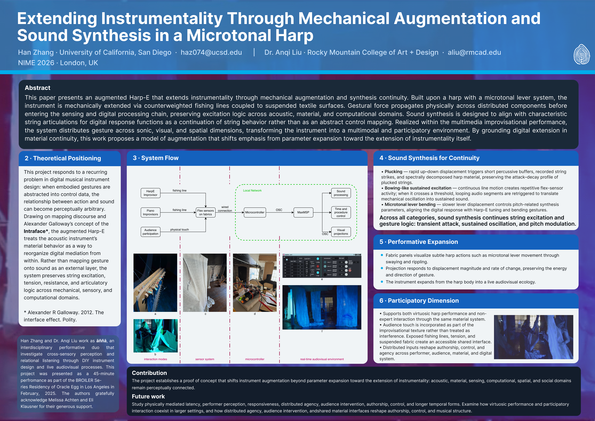
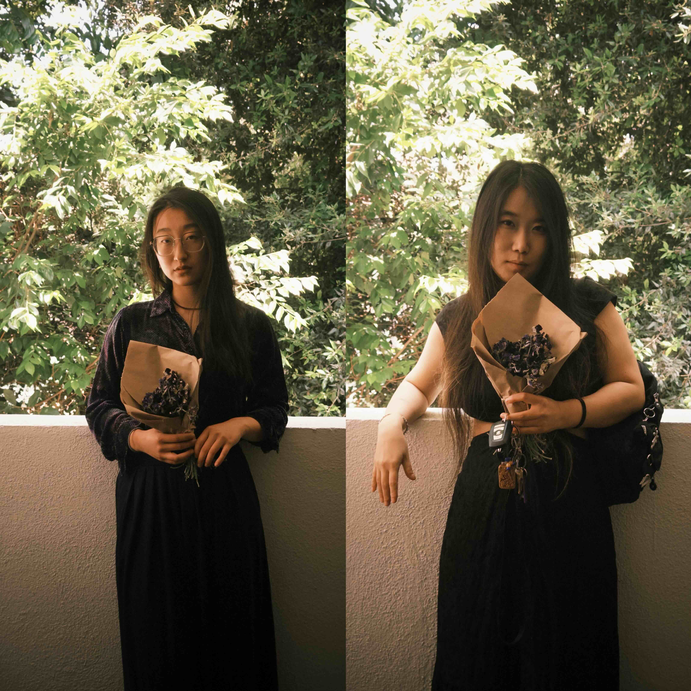

NIME 2026 paper
Extending Instrumentality Through Mechanical Augmentation and Sound Synthesis in a Microtonal Harp.

Short Excerpt (2min)
Long Excerpt (12min)
Han Zhang
Han Zhang is a multimedia artist, computer musician, performer and engineer based on earth. She actively works on creative projects that explore the new form of multimedia participatory performances with DIY installations that deliver immersive interactive experience and support her theatrical practice. She is interested in discussing the collective comprehension of technology, art, and substantive human lives. In the realm of music technology and engineering, she is interested in exploring the interpretability and controllability of timbre in sound and designing musical instruments that incorporate innovative research results. Han has presented her artworks in various academic communities including ICMC, ArteFacto, Siggraph, etc, as well as in AI-centered conferences such as NeurIPS and CVPR. She is invited as a guest artist in Every Woman Biennale(NYC) in 2026, and is currently a composer in residency at elektronmusikstudion(EMS) in Stockholm, Sweden. Han is currently pursuing her PhD in Computer Music at UC San Diego, and she has received her Master of Science in Electrical Engineering from Northwestern University, and her Bachelor of Engineering in Automation from Tsinghua University, China. She also visited Center for New Music and Audio Technologies(CNMAT) at UC Berkeley as a research scholar.
Website: https://zhanghanunwalled.com/
Dr. Anqi Liu
Praised by The Wire for music of “iridescent delicacy” and “superb,” Anqi Liu is a composer, interdisciplinary multimedia artist, photographer, and filmmaker. Boomkat described her solo album of improvisatory synthesizer performance as “detailed, narrative-driven sound that traipses across the physical and historical world to make connections we might not initially perceive.” The San Diego Union-Tribune praised her orchestral work for its distinctive musical color and compositional introspection. Her composition is included in The Best Contemporary Classical Music on Bandcamp. Her portrait album Veiled Erosion (KAIROS) has been widely acclaimed, including a review in de Volkskrant calling the music “abstract soundscapes, at times frightening, at times heartbreakingly beautiful,” and features in The Wire, Sonograma, Reportersonline, musiquemachine, and El Compositor Habla, highlighting her fragile, intimate sonic universe and its expansive cultural reach. Writing on Veiled Erosion, critic Peter Margasak noted that Liu “had already veered from any sort of conventional pathway,” situating her work within a contemporary experimental lineage shaped by instability, improvisational tension, performer agency, and communal listening aesthetics. Working across acoustic composition, free improvisation, electronics, modular synthesizer, traditional Mongolian choor khuur, multimedia, interactive system design, and audiovisual ecologies, she works on an ecology that she called fraysonics, where attunement that dwells with fragility, silence, and the limits of documentation, so relation, memory, and endurance remain audible without being reduced into extractable form. Beginning in June 2026, Anqi will serves as Assistant Professor and Music Production Program Lead at RMCAD. She holds a Ph.D. in Music Composition from UC San Diego.
Website: https://www.anqiliu.com/

Instagram: @annaduoanna